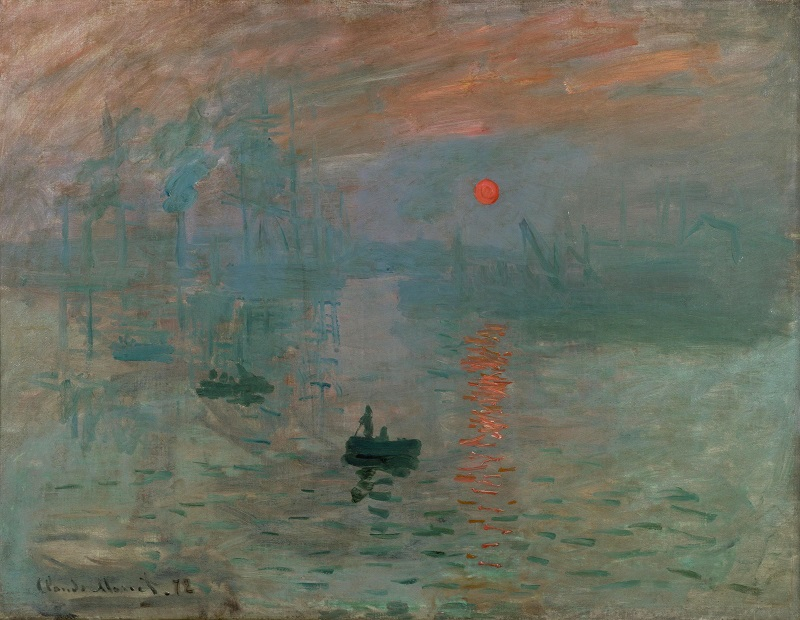

Claude Monet
13 November 1872.
Claude Monet (1840–1926) adalah seorang pelukis Prancis yang terkenal sebagai salah satu pendiri aliran Impresionisme. Monet dikenal karena cara uniknya dalam menangkap cahaya dan atmosfer melalui sapuan kuas yang cepat dan warna yang cerah. Karya-karyanya sering kali menggambarkan pemandangan alam, seperti taman, kolam teratai, dan lanskap luar ruangan. Beberapa karya terkenalnya termasuk "Impression, Sunrise" yang memberi nama aliran ini, serta seri "Water Lilies" dan "Haystacks".